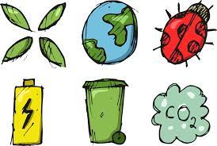
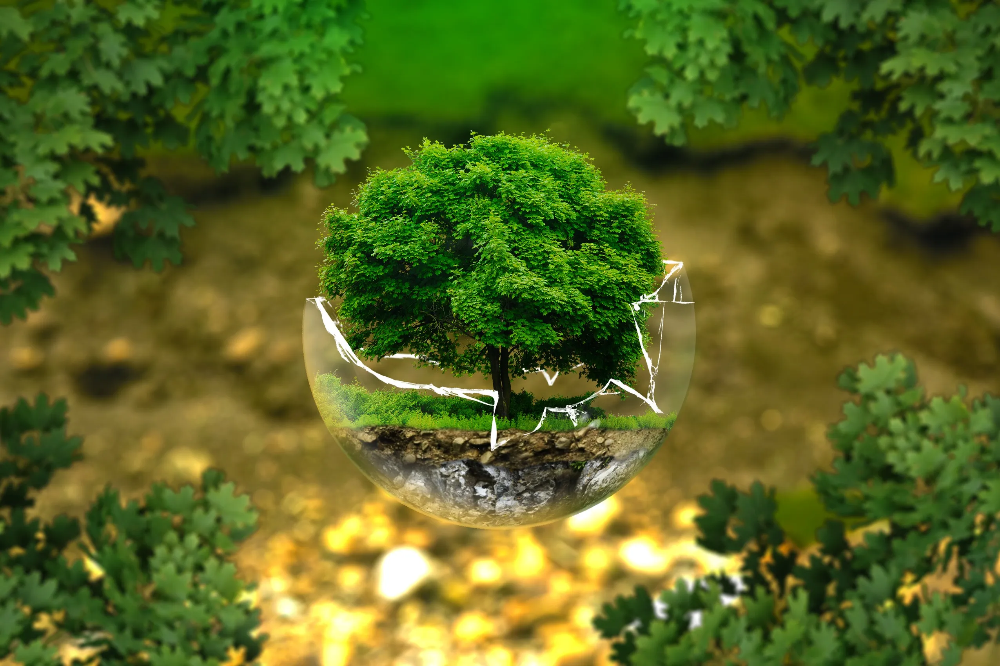

O Que Estuda A Ecologia?
A Ecologia é o estudo das relações entre organismos e o ambiente em que vivem. É uma disciplina que abrange desde a compreensão das interações entre indivíduos de uma mesma espécie até as complexas interações entre diferentes espécies em um ecossistema. Nesta pesquisa, serão abordados conceitos básicos da ecologia, sua importância e algumas aplicações práticas relacionadas à conservação da biodiversidade e gestão de recursos naturais. Segundo os autores, a ecologia começou a ser formalizada como uma disciplina científica no final do século XIX, com o trabalho de Ernst Haeckel sobre ecologia marinha e de Eugene Odum sobre ecologia terrestre. Desde então, a ecologia evoluiu para incluir diversos ramos, como ecologia de populações, ecologia de comunidades, ecologia de ecossistemas e ecologia de paisagens. Cada um desses ramos enfoca diferentes níveis de organização e diferentes processos ecológicos. Uma das principais preocupações da ecologia é entender como as atividades humanas estão afetando o meio ambiente e a biodiversidade. Os seres humanos têm impactado significativamente os ecossistemas do planeta, através de mudanças na cobertura vegetal, poluição, introdução de espécies exóticas, entre outras ações. Esses impactos têm levado à perda de biodiversidade, alterações nos ciclos de nutrientes, mudanças climáticas e outros problemas ambientais.
Conservação
A perda de biodiversidade é uma das principais consequências das atividades humanas. A biodiversidade se refere à variedade de formas de vida na Terra, incluindo a diversidade genética, de espécies e de ecossistemas. A perda de biodiversidade pode ter impactos negativos significativos nos ecossistemas, incluindo a diminuição da produtividade e da estabilidade dos ecossistemas, o aumento da incidência de doenças e a diminuição da capacidade dos ecossistemas de se adaptarem às mudanças ambientais. Além disso, a perda de biodiversidade pode afetar diretamente as pessoas, por exemplo, através da perda de espécies utilizadas na medicina ou na alimentação. Por outro lado, a conservação da biodiversidade é fundamental para garantir a sustentabilidade dos ecossistemas e das sociedades humanas. Existem diversas estratégias para a conservação da biodiversidade, incluindo a criação de áreas protegidas, a restauração de ecossistemas degradados, o manejo sustentável de recursos naturais e a conscientização da população sobre a importância da biodiversidade.
Figura 1. Ecologia (PIXABAY, 2023)
Aplicações Da Ecologia
Segundo o autor, uma das principais aplicações práticas da ecologia na conservação da biodiversidade é a identificação e proteção de espécies ameaçadas de extinção. A Lista Vermelha da União Internacional para a Conservação da Natureza (IUCN) é um importante instrumento para a avaliação do risco de extinção das espécies. Além disso, a ecologia pode ser utilizada para a restauração de ecossistemas degradados, através da identificação de espécies e processos ecológicos chave que devem ser recuperados para a recuperação do ecossistema. A gestão de recursos hídricos é um exemplo de aplicação prática da ecologia na gestão de recursos naturais. A ecologia pode ser utilizada para entender os processos hidrológicos em uma bacia hidrográfica e para identificar as áreas críticas em termos de degradação ambiental. Com base nesses dados, podem ser desenvolvidas estratégias para a conservação e recuperação das áreas degradadas, bem como para o manejo sustentável da água. Outra aplicação da ecologia na gestão de recursos naturais é a identificação de áreas prioritárias para a conservação da biodiversidade. A ecologia pode ser utilizada para mapear a distribuição de espécies e ecossistemas em uma região, identificando áreas de alta biodiversidade e áreas críticas para a conservação. Com base nessas informações, podem ser desenvolvidas estratégias para a criação de áreas protegidas e para o manejo sustentável dos recursos naturais. Além da conservação da biodiversidade e da gestão de recursos naturais, a ecologia também tem implicações na saúde humana. A ecologia da doença é uma área emergente da ecologia que estuda as interações entre os organismos que causam doenças e seus hospedeiros, bem como os fatores ambientais que afetam essas interações. Essa abordagem pode ajudar a entender a epidemiologia de doenças infecciosas, bem como a desenvolver estratégias para o controle e prevenção dessas doenças. A ecologia também pode ser utilizada para entender os impactos das mudanças climáticas nos ecossistemas e na biodiversidade. As mudanças climáticas têm levado a alterações na temperatura, na precipitação e nos regimes de ventos em todo o mundo. Essas mudanças têm afetado diretamente os ecossistemas, incluindo a distribuição das espécies e a produtividade dos ecossistemas. A ecologia pode ajudar a entender esses impactos e a desenvolver estratégias de adaptação para minimizar os efeitos negativos.
Figura 2. Meio-Ambiente (AGRO20, 2023)
Referências bibliográficas: